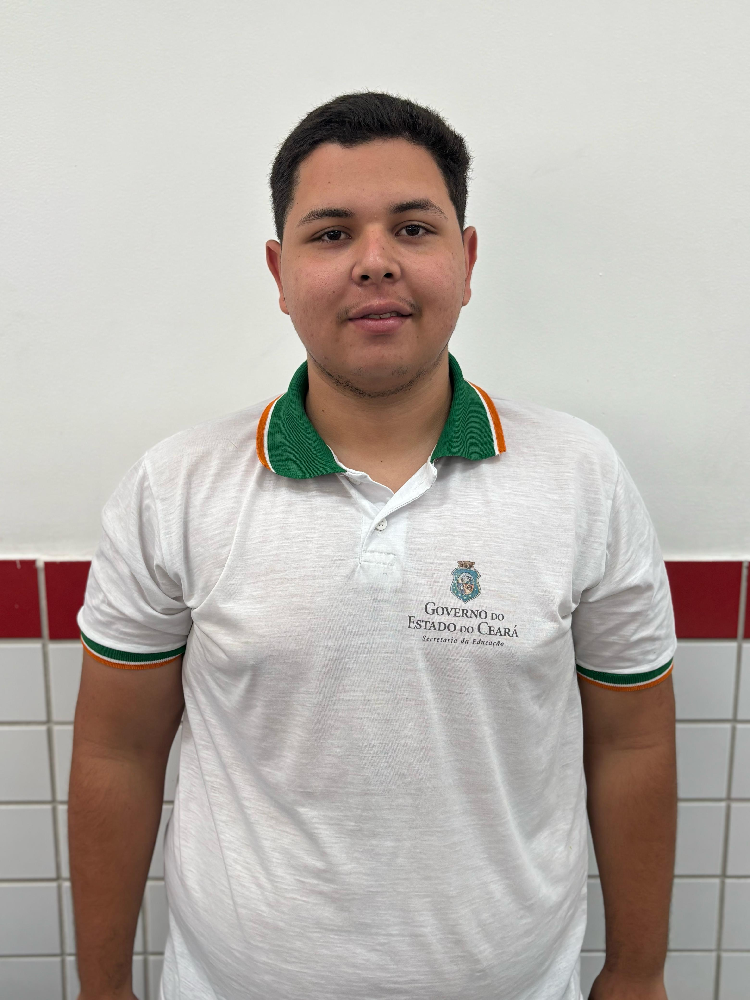
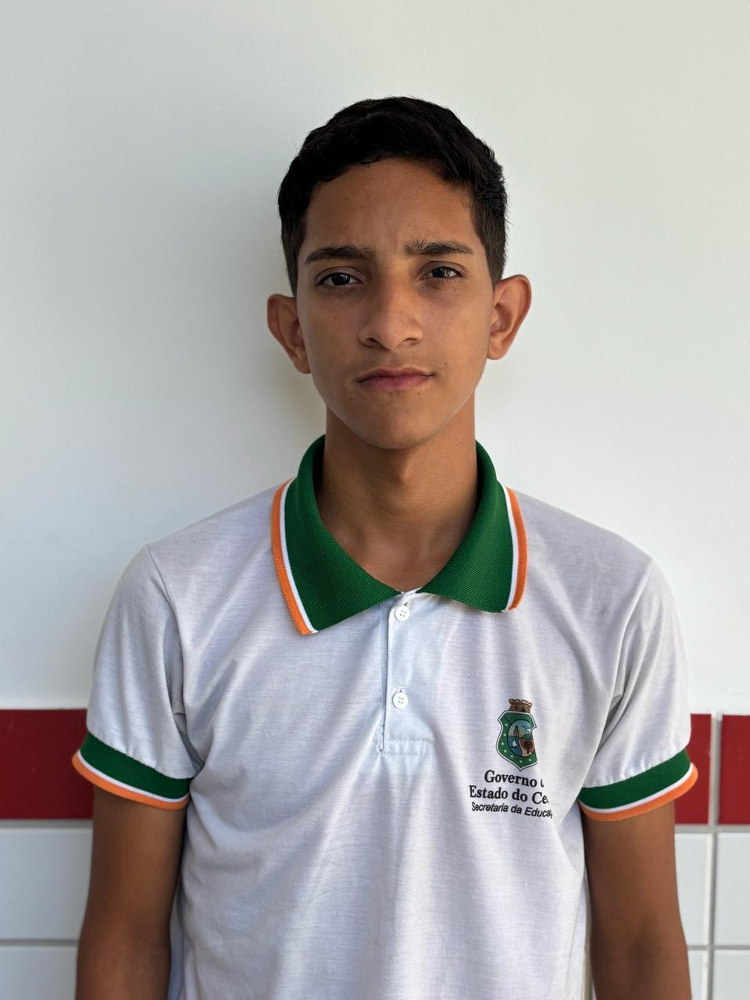
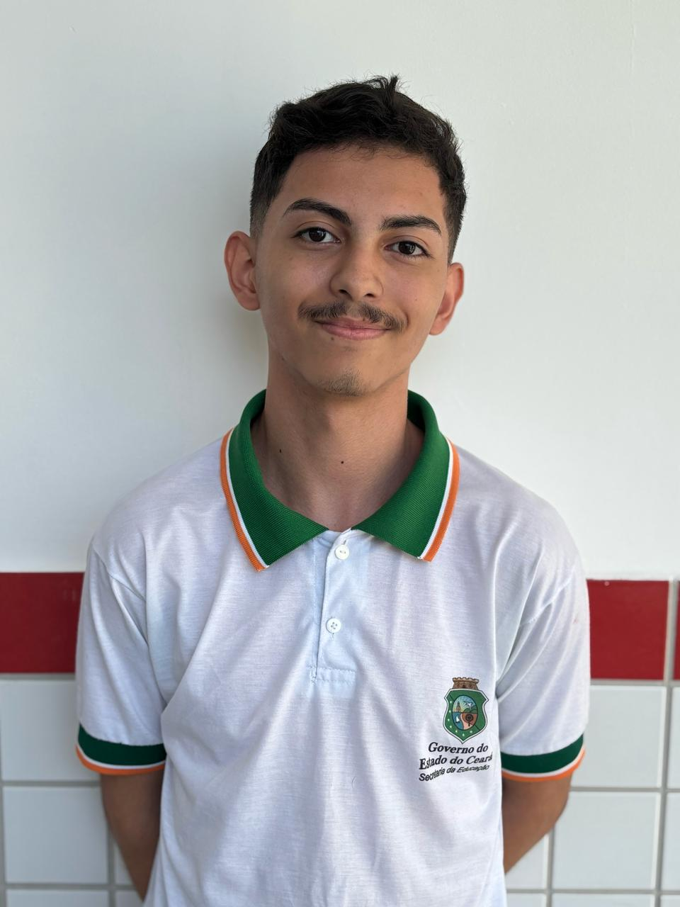
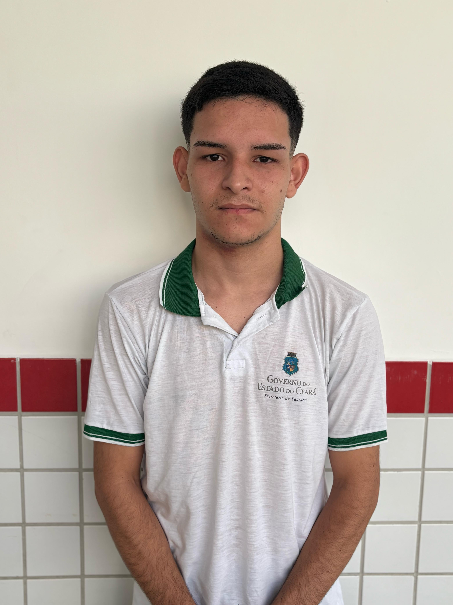

Você colhe o que você planta
Conectamos produtores do semiárido cearense a insumos, conhecimento e apoio técnico para irrigar sonhos e colher resultados.
Os desafios enfrentados pelos produtores

Dificuldade de acesso a insumos
Falta de sementes, irrigação, fertilizantes e animais de qualidade a preços acessíveis.

Falta de assistência técnica
Decisões pouco estratégicas por falta de orientação agrícola e suporte contínuo.

Baixa conectividade
Impossibilidade de utilizar soluções digitais pela falta de internet em áreas rurais.

Logística e escoamento ruins
Transporte precário reduz o lucro e dificulta o acesso aos centros de consumo.
A Solução da Plantech
Uma plataforma digital simples e prática que conecta produtores a fornecedores regionais, fornece conhecimento técnico acessível e apoio à irrigação com baixo custo.

Marketplace Regional
Conexão direta com fornecedores de sementes, insumos e animais.

Conteúdo Didático
Vídeos, áudios e imagens com orientação prática sobre manejo e irrigação.

Suporte à Irrigação
Foco em soluções sustentáveis como gotejamento e água da chuva.
Funcionalidades da Plataforma

Plataforma leve
Funciona bem mesmo em áreas com baixa internet.

Fácil de usar
Interface intuitiva, feita para quem nunca usou tecnologia.

Suporte Local
Equipe disponível para dúvidas e apoio técnico sempre que precisar.
Pesquisa com Agricultores
Entrevistas com produtores de Hidrolândia revelaram:
- ✔ Irrigação ineficiente e cara
- ✔ Baixo acesso a conhecimento técnico
- ✔ Interesse em tecnologias acessíveis e fáceis
Quem Somos

Ariel Bezerra de Oliveira
Co-fundador | Desenvolvimento de produto e pesquisa agrícola.

Isaias Vieira de Mesquita
Co-fundador | Estratégia de mercado e comunicação com produtores.
Joab Martins Mesquita
Co-fundador | Design da plataforma e experiência do usuário.

Levy Martins de Oliveira
Co-fundador | Logística e parcerias com fornecedores.
Luis Paulo Pereira Martins Bezerra
Co-fundador | Gestão administrativa e legal.

Luiz Vytor Oliveira Martins
Co-fundador | Tecnologia e suporte técnico local.
Análise SWOT
Forças (Strengths)
- ✔ Proposta de valor alinhada às necessidades locais
- ✔ Plataforma simples e acessível
- ✔ Foco em baixo custo e sustentabilidade
- ✔ Conhecimento da realidade do semiárido
Fraquezas (Weaknesses)
- ✖ Dependência de infraestrutura digital precária
- ✖ Necessidade de captação de recursos para expansão
- ✖ Equipe ainda em estruturação
Oportunidades (Opportunities)
- 📈 Crescente demanda por soluções tecnológicas no campo
- 📈 Programas de incentivo à agricultura familiar
- 📈 Expansão para outros municípios do semiárido
Ameaças (Threats)
- ⚠ Concorrência de grandes plataformas do agronegócio
- ⚠ Barreiras logísticas e de conectividade persistentes
- ⚠ Resistência de alguns produtores ao uso de tecnologia
Sobre Hidrolândia - CE
Berço da Plantech, Hidrolândia está localizada no sertão de Crateús e representa fielmente a realidade de muitos produtores do semiárido brasileiro.
Perfil Populacional
A cidade conta com aproximadamente 18.225 habitantes (2024) e um PIB total de R$ 185 milhões (2021).
Economia Rural
O agro representa cerca de 18,5% do PIB local, com foco na criação de ovinos, caprinos e na apicultura.
Clima e Solo
Clima tropical semiárido com 848,4 mm de chuva em 2023. Vegetação de caatinga e floresta caducifólia espinhosa.
Avanços Recentes
Entrega de títulos de terra, kits de apicultura e reprodutores ovinos pelas políticas públicas estaduais.
Histórias Reais
Conheça a realidade de quem vive da terra e está transformando sua produção com a ajuda da Plantech.

João, produtor de milho
"Antes da Plantech, a irrigação me custava muito caro. Com as dicas de gotejamento, reduzi meu gasto em 40% e aumentei a colheita!"

Maria, criadora de ovinos
"Com o suporte técnico e os vídeos que aprendi a assistir no celular, consegui melhorar o manejo e vender direto na feira da cidade."

Seu Francisco, agricultor familiar
"Achei que nunca fosse entender essas coisas de aplicativo, mas a Plantech é fácil de usar e sempre tem alguém da equipe pra ajudar."
Como Funciona a Plantech?
A Plantech foi pensada para ser simples, leve e eficiente. Veja como qualquer produtor pode começar a usar nossa plataforma em poucos passos:

1. Cadastro rápido
Você se cadastra com informações básicas, pelo celular ou computador, sem burocracia.

2. Escolha do que precisa
Acesse o que precisa: insumos, vídeos, suporte técnico ou soluções de irrigação.

3. Conexão direta
Conecte-se a fornecedores da sua região e técnicos prontos para ajudar, tudo pela plataforma.

4. Produza com apoio
Com conhecimento, irrigação eficiente e suporte, sua produção cresce com mais segurança.

5. Venda melhor
Elimine atravessadores e aumente seus lucros vendendo direto com apoio logístico e digital.
Calculadora de Irrigação
Descubra a quantidade ideal de água para sua lavoura e otimize o uso de recursos. Basta preencher os campos abaixo:
Perguntas Frequentes
Ainda tem dúvidas? Veja as respostas para as perguntas mais comuns dos nossos usuários:
🌱 O que é a Plantech?
É uma plataforma digital que conecta produtores rurais a insumos, suporte técnico, conteúdo educativo e soluções de irrigação adaptadas ao semiárido.
📶 Preciso de internet para usar?
Sim, mas a plataforma é extremamente leve e pode funcionar até com conexões mais lentas, pensando justamente nas zonas rurais.
💰 A plataforma é paga?
Não. O acesso básico à plataforma é gratuito. Algumas funcionalidades futuras podem ter parcerias ou planos específicos.
👩🌾 Quem pode usar a Plantech?
Qualquer produtor rural, especialmente os de pequeno e médio porte, que queira melhorar sua produção com apoio técnico e digital.
📞 Como recebo suporte?
Você pode entrar em contato direto com nosso time de apoio local ou pelo e-mail contato@plantech.com.br. Em breve, teremos suporte via WhatsApp.

Quer fazer parte da Plantech?
Entre em contato conosco e saiba como ajudar a transformar o campo com tecnologia acessível.
contato@plantech.com.br